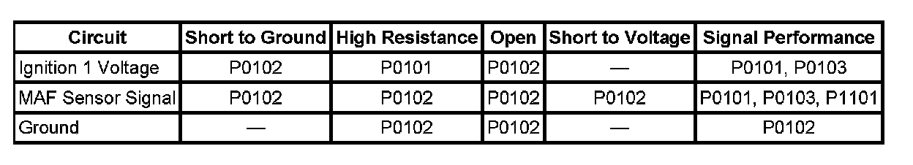
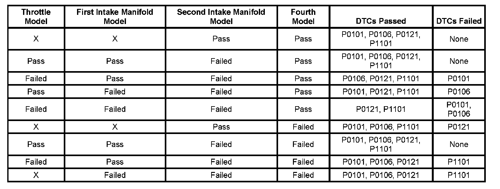

P1101
DTC P0101 or P1101
DIAGNOSTIC INSTRUCTIONS
- Perform the Diagnostic System Check - Vehicle prior to using this diagnostic procedure. Initial Inspection and Diagnostic Overview
- Strategy Based Diagnosis for an overview of the diagnostic approach.
- Diagnostic Procedure Instructions provide an overview of each diagnostic category.
DTC DESCRIPTORS
DTC P0101
Mass Air Flow (MAF) Sensor Performance
DTC P1101
Intake Air Flow System Performance

DIAGNOSTIC FAULT INFORMATION
CIRCUIT/SYSTEM DESCRIPTION
P0101
- The mass air flow (MAF) sensor is an air flow meter that measures the amount of air entering the engine. The control module uses the MAF sensor signal to provide the correct fuel delivery for all engine speeds and loads. A small quantity of air entering the engine indicates a deceleration or idle condition. A large quantity of air entering the engine indicates an acceleration or high load condition. The MAF sensor has the following circuits:
- An ignition 1 voltage circuit
- A ground circuit
- A MAF sensor signal circuit
- The control module applies a voltage to the sensor on the signal circuit. The sensor uses the voltage to produce a frequency based on the inlet air flow through the sensor bore. The frequency varies within a range of near 2,000 Hertz at idle to near 10,000 Hertz at maximum engine load. The control module uses the following sensor inputs to calculate a predicted MAF value:
- The barometric pressure (BARO) at key ON
- The manifold absolute pressure (MAP) sensor
- The intake air temperature (IAT) sensor
- The engine coolant temperature (ECT) sensor
- The throttle position indicated angle
- The engine speed (RPM)
- The control module compares the actual MAF sensor frequency signal to the predicted MAF value. This comparison will determine if the signal is stuck based on a lack of variation, or is to-low or to-high for a given operating condition. If the control module detects the actual MAF sensor frequency signal is not within a predetermined range of the calculated MAF value, DTC P0101 sets.
P1101
- The intake flow rationality diagnostic provides the within-range rationality check for the MAF, MAP, and the throttle position (TP) sensors. This is an explicit model-based diagnostic containing 4 separate models for the intake system.
- The throttle model describes the flow through the throttle body and is used to estimate the MAF through the throttle body as a function of BARO, TP, IAT, and estimated MAP.
- The first intake manifold model describes the intake manifold and is used to estimate MAP as a function of the MAF into the manifold from the throttle body and the MAF out of the manifold caused by engine pumping. The flow into the manifold from the throttle uses the MAF estimate calculated from the above throttle model.
- The second intake manifold model is identical to the first intake manifold model except that the MAF sensor measurement is used instead of the throttle model estimate for the throttle air input.
- The fourth model is created from the combination and additional calculations of the throttle model and the first intake manifold model.

- The estimates of MAF and MAP obtained from this system of models and calculations are then compared to the actual measured values from the MAF, MAP, and the TP sensors and to each other to determine the appropriate DTC to fail. The table illustrates the possible failure combinations and the resulting DTC or DTCs.
CONDITIONS FOR RUNNING THE DTC
P0101
- DTCs P0102, P0103, P0107, P0108, P0112, P0113, P0117, P0118, P0335, P0336 are not set.
- The engine speed is between 450-6,800 RPM.
- The IAT Sensor parameter is between -7 and +125°C (+19 and +257°F).
- The ECT Sensor parameter is between 70-125°C (158-257°F).
- The ignition voltage is between 9-18 volts.
- This DTC runs continuously within the enabling conditions.
P1101
- The engine is running.
- DTCs P0102, P0103, P0107, P0108, P0112, P0113, P0117, P0118, P0335, P0336 are not set.
- The engine coolant temperature is between 70-125°C (158-257°F).
- The intake air temperature is between -7 and +125°C (+19.4 and +257°F).
CONDITIONS FOR SETTING THE DTC
The engine control module (ECM) detects that the actual measured airflow from the MAF, MAP, and TP sensors is not within range of the calculated airflow that is derived from the system of models for more than 0.5 second.
ACTION TAKEN WHEN THE DTC SETS
DTCs P0101 and P1101 are Type B DTCs.
CONDITIONS FOR CLEARING THE MIL/DTC
DTCs P0101 and P1101 are Type B DTCs.
DIAGNOSTIC AIDS
- Inspect the harness of the MAF sensor to verify that it is not routed to-close to the following components:
- The secondary ignition wires or coils
- Any solenoids
- Any relays
- Any motors
- A wide open throttle (WOT) acceleration from a stop should cause the MAF sensor parameter on the scan tool to increase rapidly. This increase should be from 3-10 g/s at idle to 150 g/s or more at the time of the 1-2 shift. If the increase is not observed, inspect for a restriction in the induction system or the exhaust system.
- A high resistance may cause a driveability concern before this DTC sets.
CIRCUIT/SYSTEM VERIFICATION
- If DTC P0641 or P0651 are set, refer to Diagnostic Trouble Code (DTC) List - Vehicle. Diagnostic Trouble Code Descriptions
- Verify the integrity of the entire air induction system by inspecting for the following conditions:
- Any damaged components
- Loose or improper installation
- An air flow restriction
- Any vacuum leak
- Water intrusion
- In cold climates, inspect for any snow or ice buildup
- Verify that restrictions d-not exist in the exhaust system. Refer to Restricted Exhaust. Restricted Exhaust
- Engine running, observe the scan tool MAF Sensor parameter. The reading should be between 1,700-3,200 Hz depending on the ECT.
- A wide open throttle (WOT) acceleration from a stop should cause the MAF Sensor parameter on the scan tool to increase rapidly. This increase should be from 2-6 g/s at idle to greater than 100 g/s at the time of the 1-2 shift.
- The barometric pressure (BARO) that is used by the ECM to calculate the air flow models is initially based on the MAP sensor at ignition ON. When the engine is running, the ECM will continually update the BARO value near WOT using the MAP sensor and a calculation. A skewed MAP sensor will cause the BARO value to be inaccurate. Determine the current vehicle testing altitude. Ignition ON, observe the scan tool BARO sensor parameter. Compare the parameter to the Altitude vs Barometric Pressure table. Refer to Altitude Versus Barometric Pressure.
- A skewed MAP sensor will also cause the first and second intake manifold models to disagree with the actual MAP sensor measurements. Use the scan tool and compare the MAP Sensor parameter to a known good vehicle, under various operating conditions.
CIRCUIT/SYSTEM TESTING
1. IMPORTANT: All electrical components and accessories must be turned OFF, and allowed to power down.
Ignition OFF, disconnect the MAF/IAT harness connector at the MAF/IAT sensor.
2. Ignition OFF, test for less than 5.0 ohms of resistance between the ground circuit terminal B and ground.
- If greater than the specified range, test the ground circuit for an open/high resistance.
3. Ignition ON, verify that a test lamp illuminates between the ignition circuit terminal C and ground.
- If the test lamp does not illuminate, test the ignition circuit for a short to ground or an open/high resistance.
4. Ignition ON, test for 4.8-5.2 volts between the signal circuit terminal A and ground.
- If less than the specified range, test the signal circuit for a short to ground or an open/high resistance. If the circuit tests normal, replace the ECM.
- If greater than the specified range, test the signal circuit for a short to voltage. If the circuit tests normal, replace the ECM.
5. Connect the J 38522 to the vehicle.
COMPONENT TESTING
To determine if the ECM can properly process the MAF sensor frequency signal, connect the J 38522 to the vehicle as follows:
1. Turn OFF the ignition.
2. Connect the battery voltage supply, and ground the black lead.
3. Connect the red lead to the signal circuit of the MAF sensor.
4. Set the duty cycle switch to Normal.
5. Set the Frequency switch to 5 K.
6. Set the signal switch to 5 volts.
7. Start the engine.
8. Observe the MAF Sensor parameter for the correct range of 4,950-5,025 Hz.
- If the MAF Sensor parameter is not within the specified range, replace the ECM.
- If the MAF Sensor parameter is within the specified range, replace the MAF sensor.
REPAIR INSTRUCTIONS
Perform the Diagnostic Repair Verification after completing the diagnostic procedure.
- Mass Airflow Sensor/Intake Air Temperature Sensor Replacement
- Control Module References Verification Tests